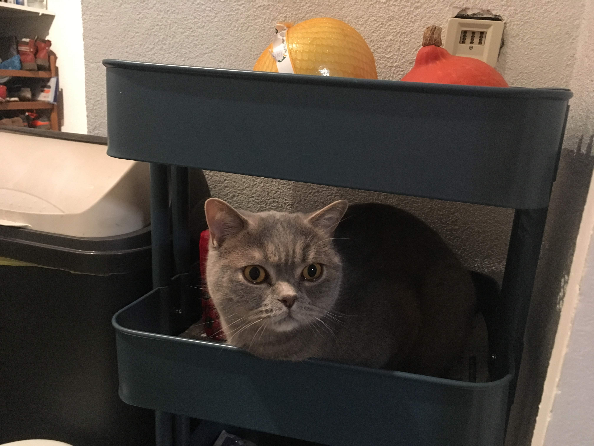

Neko把你拿来做测试了！
Other articles
 Neko Variance, gradient, Jacobian and Hessian matrix 记忆
Jacobian矩阵 用于一阶梯度下降法
Hessian矩阵，用于二阶牛顿法
高斯牛顿法，使用JTJ作为牛顿法中二阶Hessian矩阵的近似， 从而省略了计算Ｈ的过程
下面这个文章介绍了Jacobian与Hessian矩阵的关系用途Hessian是对称矩阵
jacobian, Hassian and gradient关系covariance,协方差：
$$cov(X,Y) = E((X-\mu)(Y-\nu)) = E(X \cdot Y) - \mu\nu$$variance, 方差： 二阶矩
一个随机变量的方差描述的是它的离散程度，也就是该变量离其期望值的距离, \(\mu=E[X]\)$$Var(X) = cov(X, X)$$$$Var(X) = E[(X-\mu)^2 ...read more